将普通铅笔转化为可导电的纯石墨棒，适用于多种实验或制作项目。 Transforming ordinary pencils into conductive graphite rods for various experiments and projects.
用打火机小心加热铅笔尖，直到木质部分开始燃烧并炭化。确保火焰集中在木头上，避免直接燃烧石墨芯。
Carefully heat the pencil tip with a lighter until the wood begins to burn and char. Ensure the flame focuses on the wood, avoiding direct burning of the graphite lead.
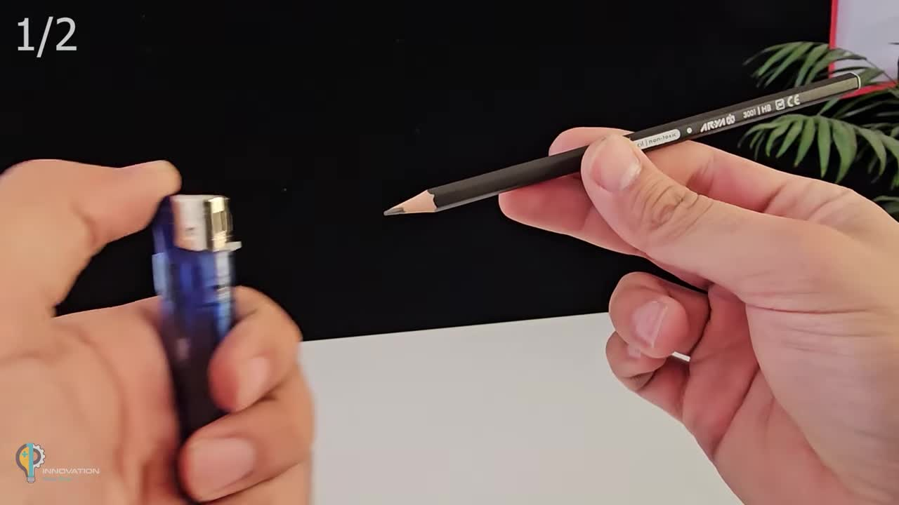用尖嘴钳轻轻剥离烧焦的木屑，露出内部的纯石墨芯。这个过程需要耐心，避免弄断石墨芯。
Gently peel off the charred wood shavings with needle-nose pliers to expose the pure graphite lead. This process requires patience to avoid breaking the lead.
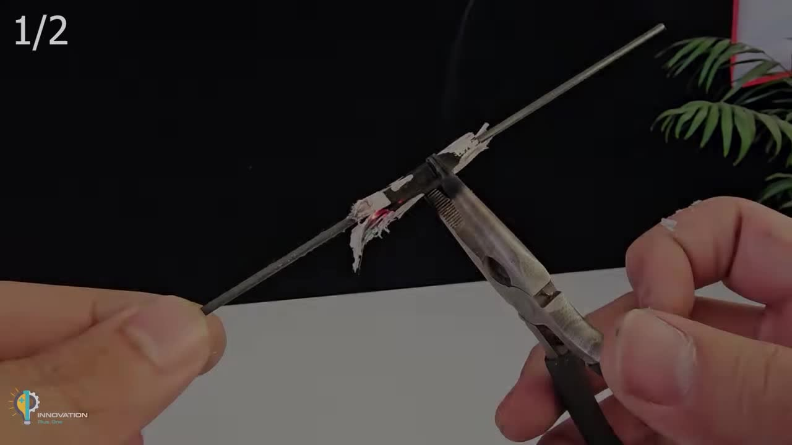重复以上步骤，收集多根石墨芯。这些石墨芯可以单独使用，也可以组合起来形成更长的导电棒。
Repeat the above steps to collect multiple graphite leads. These leads can be used individually or combined to form longer conductive rods.
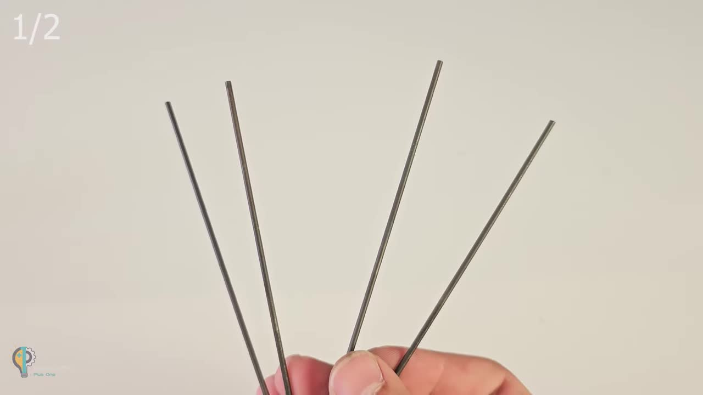通过电解食盐水产生氢气和氧气，并利用氢气制造一个可用于精细焊接的微型火焰。 Generate hydrogen and oxygen through saltwater electrolysis, and use hydrogen to create a micro-flame for fine welding.
拆卸注射器活塞和前端盖，只保留筒身。在活塞盖上钻孔并插入石墨芯，用强力胶固定。确保石墨芯均匀分布且长度一致。
Disassemble the syringe plunger and front cap, keeping only the barrel. Drill holes in the plunger cap and insert graphite leads, securing them with super glue. Ensure even distribution and consistent length.
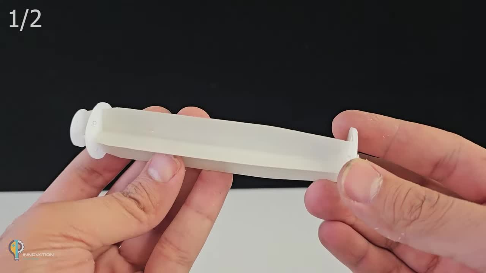 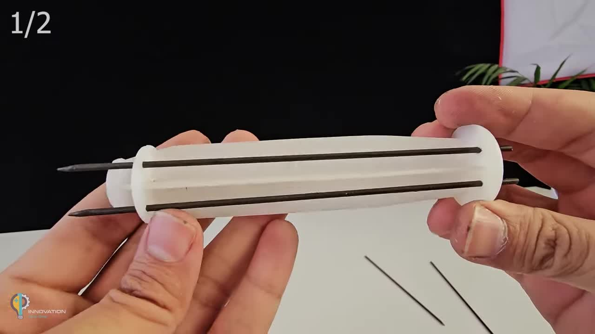在玻璃瓶中倒入纯净水，加入少量食盐，搅拌直至完全溶解。食盐能增加水的导电性，提高制氢效率。
Pour distilled water into a glass bottle, add a small amount of salt, and stir until completely dissolved. Salt increases the water's conductivity, improving hydrogen production efficiency.
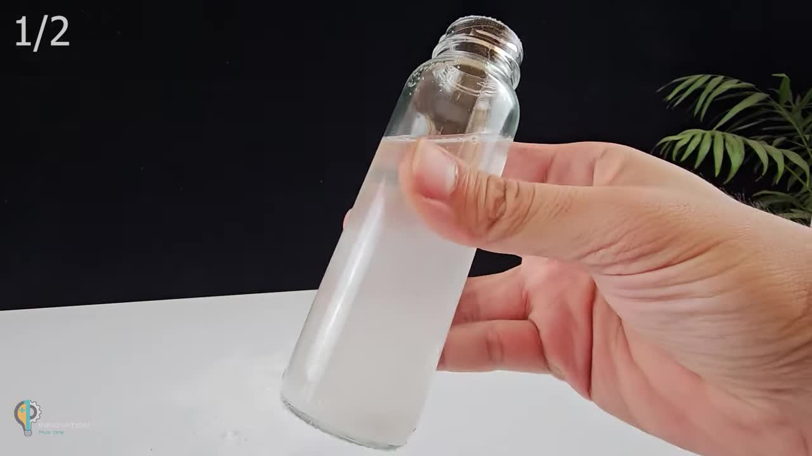将石墨芯组件插入电解液瓶中，确保石墨芯完全浸没。用鳄鱼夹将电源（例如：12V直流电源）连接到石墨芯两端，观察气泡（氢气和氧气）的产生。
Insert the graphite lead assembly into the electrolyte bottle, ensuring the leads are fully submerged. Use alligator clips to connect a power source (e.g., 12V DC power) to both ends of the graphite leads, and observe the bubbles (hydrogen and oxygen) forming.
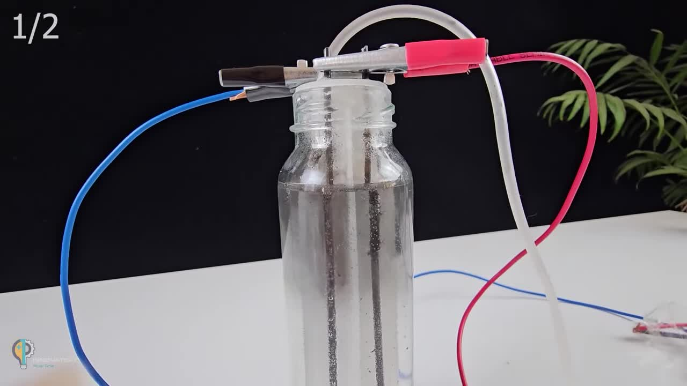在小玻璃瓶盖上钻两个小孔。一个孔用于连接从电解槽引出的气体管（氢气），另一个用于连接带有针头的喷嘴。用强力胶密封。
Drill two small holes in the small glass bottle cap. One hole connects to the gas tube (hydrogen) from the electrolyzer, and the other connects to the needle nozzle. Seal with super glue.
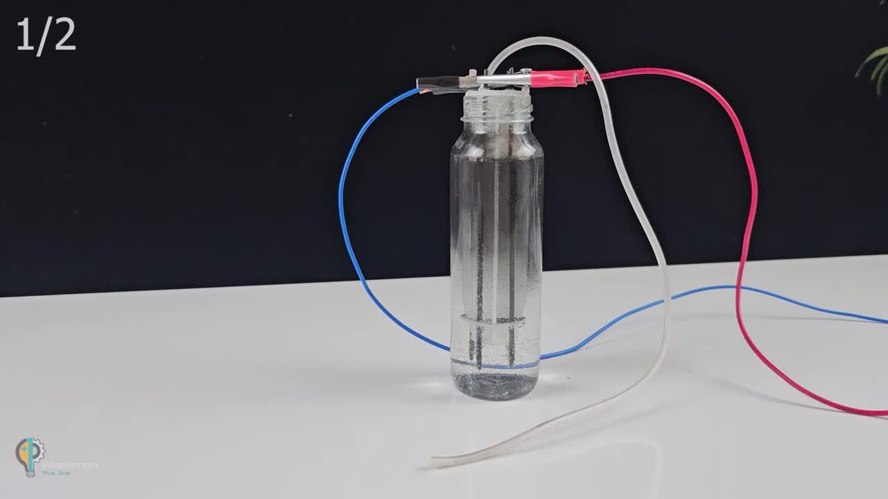 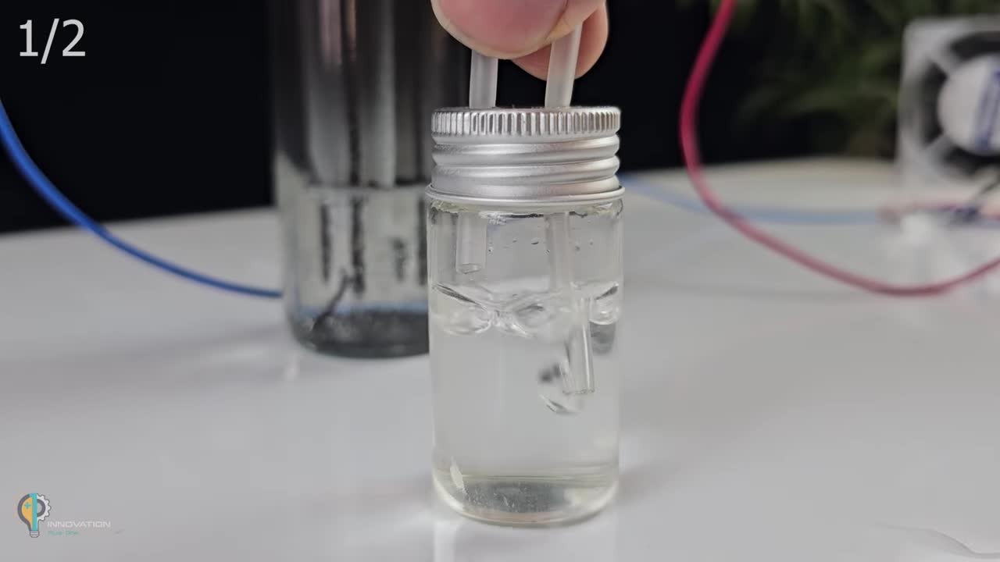待氢气在收集瓶中累积一定量后，用打火机在喷嘴处点燃。你会看到一个细小而稳定的蓝色火焰，这正是纯氢气燃烧的特征。
Once a sufficient amount of hydrogen has accumulated in the collection bottle, ignite it at the nozzle with a lighter. You will see a small, stable blue flame, characteristic of pure hydrogen combustion.
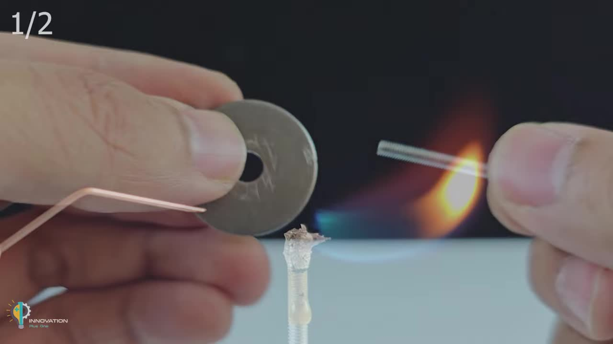利用自制微型火焰，将普通安全别针焊接在一起，展示简易焊接的可能性。 Utilize the DIY micro-flame to weld ordinary safety pins together, demonstrating the possibilities of simple welding.
将两个安全别针的环形部分互相套住，确保它们紧密接触，形成一个可以焊接的连接点。
Interlock the loop ends of two safety pins, ensuring they are in close contact to form a connection point for welding.
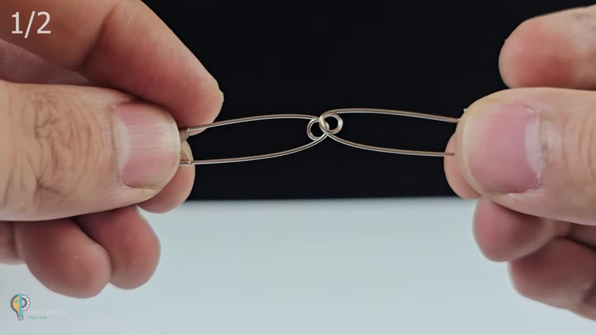用微型火焰精确加热别针的连接处，同时将焊锡丝触碰加热区域。焊锡会迅速熔化，将两个别针牢固连接。
Precisely heat the connection point of the pins with the micro-flame, while touching the solder wire to the heated area. The solder will melt rapidly, securely joining the two pins.
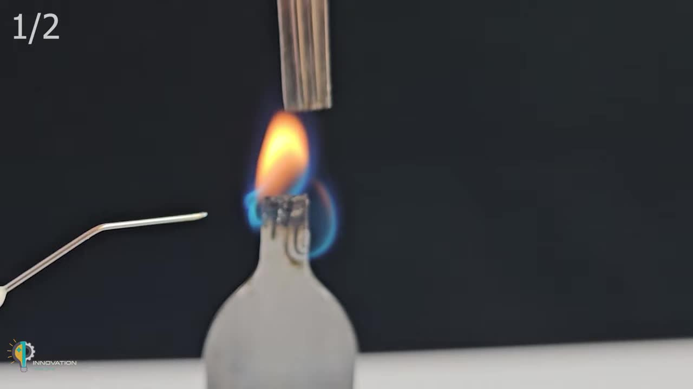让焊接点自然冷却后，轻轻拉动别针，检查焊接是否牢固。成功的焊接会形成一个紧密、不易断裂的连接。
After the weld cools naturally, gently pull the pins to check for a secure connection. A successful weld will form a tight, unbreakable joint.
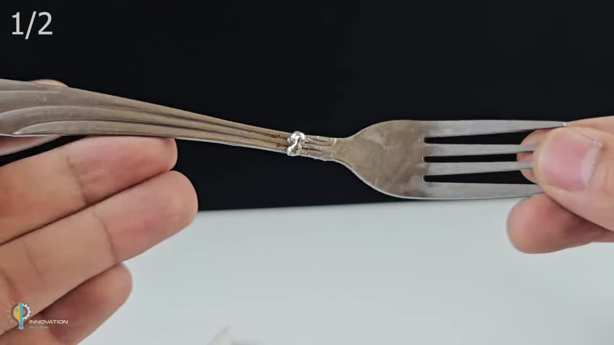将一次性剃须刀的刀片安全固定在刀柄上，制作成一个简易的精确切割工具。 Securely attach a disposable razor blade to its handle to create a simple yet precise cutting tool.
用小刀或美工刀小心地从一次性剃须刀柄上分离刀头部分。确保操作安全，避免刀片伤手。
Carefully separate the razor head from the disposable razor handle using a utility knife or craft knife. Ensure safety during this process to avoid cuts.
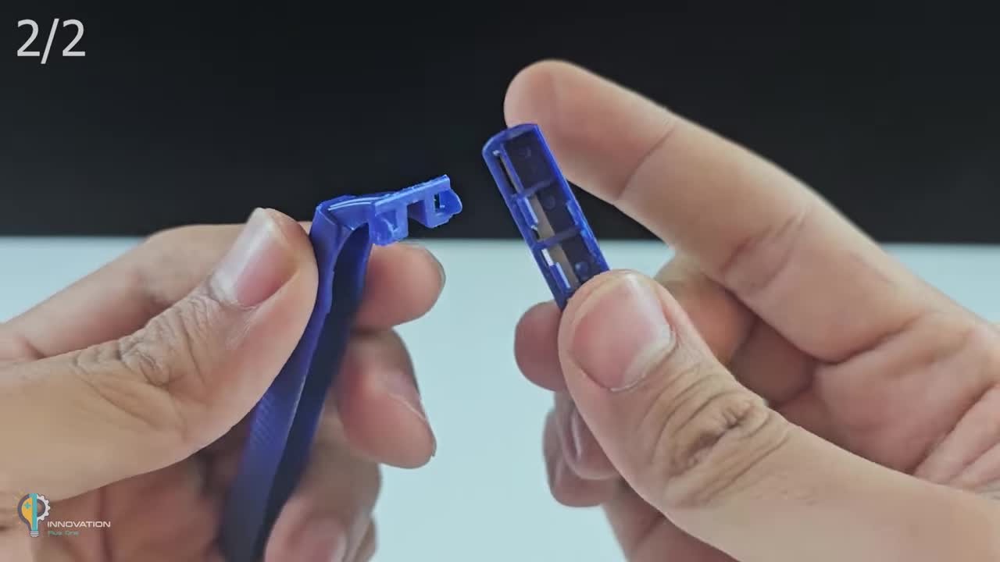将刀片重新放置在剃须刀柄的头部，用细线紧密缠绕，将刀片牢固地固定在刀柄上。确保缠绕均匀且紧实。
Reposition the blade onto the head of the razor handle. Tightly wrap a thin thread around it, securing the blade firmly to the handle. Ensure even and tight wrapping.
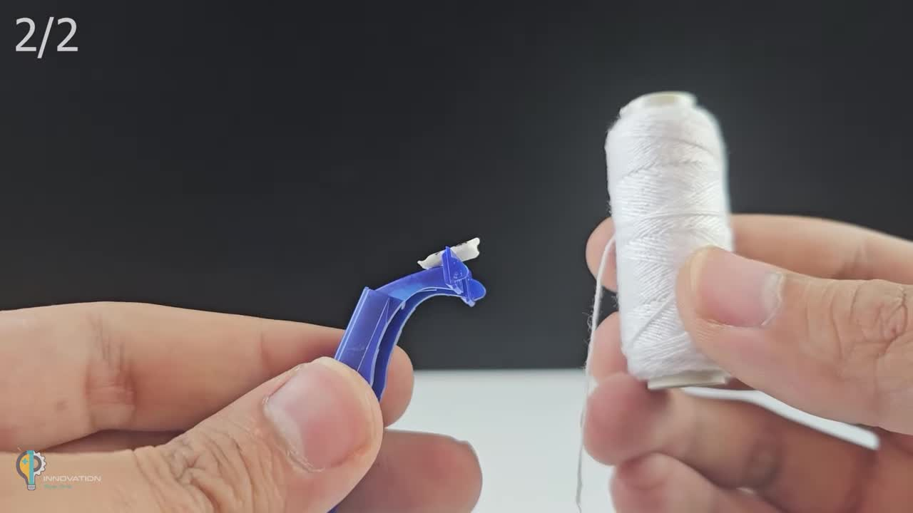剪断多余的线头，在缠绕处滴上少量强力胶进行加固。待胶水干燥后，你的简易切割工具就制作完成了。
Cut any excess thread and apply a small amount of super glue to the wrapped area for reinforcement. Once the glue dries, your simple cutting tool is complete.
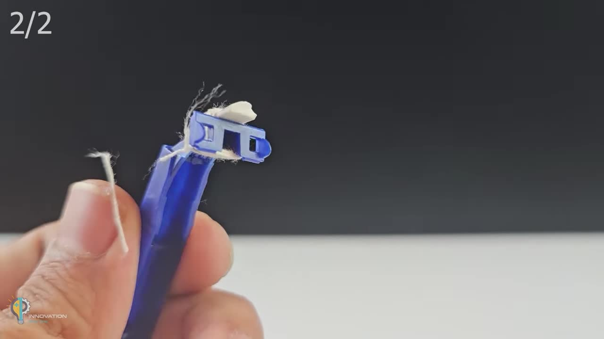利用改装后的剃须刀片，制作一个简易而有效的玻璃切割器。 Create a simple yet effective glass cutter using a modified razor blade.
确保玻璃表面干净无尘，这将有助于划出更清晰、更准确的切痕。同时准备好直尺和自制切割工具。
Ensure the glass surface is clean and dust-free, which will help create clearer and more accurate scores. Have your ruler and DIY cutting tool ready.
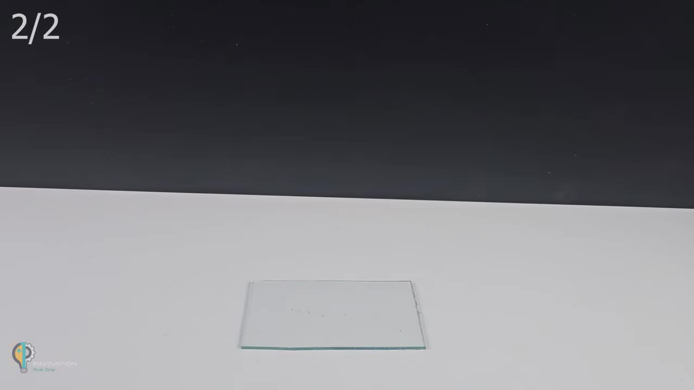将直尺稳固地放置在玻璃上，作为切割的引导。沿直尺边缘，用自制剃须刀片切割工具轻轻且均匀地划过玻璃，形成一道明显的划痕。只需划一次，重复划线会降低效果。
Place the ruler firmly on the glass to guide the cut. Along the edge of the ruler, gently and evenly score the glass with your DIY razor blade cutting tool, creating a clear score line. Only score once; repeated scoring can reduce effectiveness.
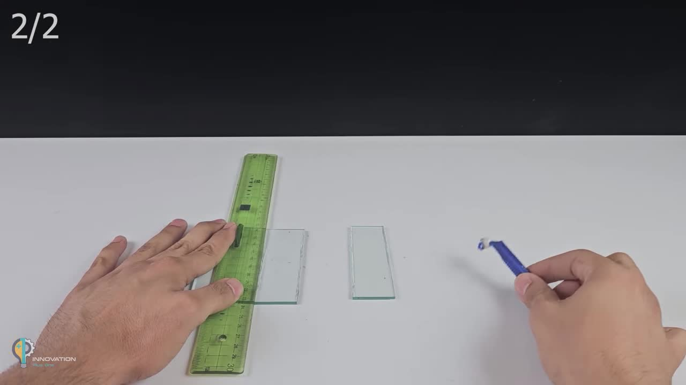将划好线的玻璃放置在桌子边缘，确保划痕与边缘对齐。双手用力均匀向下压，玻璃会沿着划痕整齐地折断。戴手套以防受伤。
Position the scored glass with the score line aligned with the edge of a table. Apply even downward pressure with both hands, and the glass will cleanly break along the score line. Wear gloves to prevent injury.
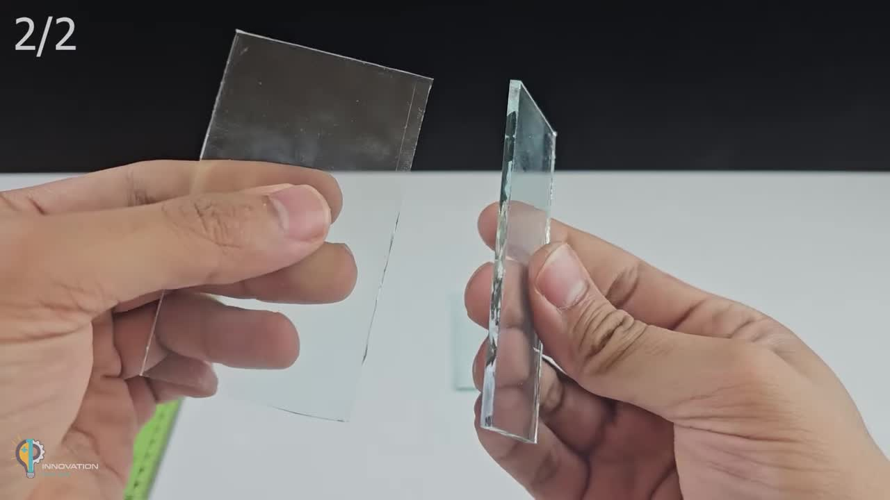